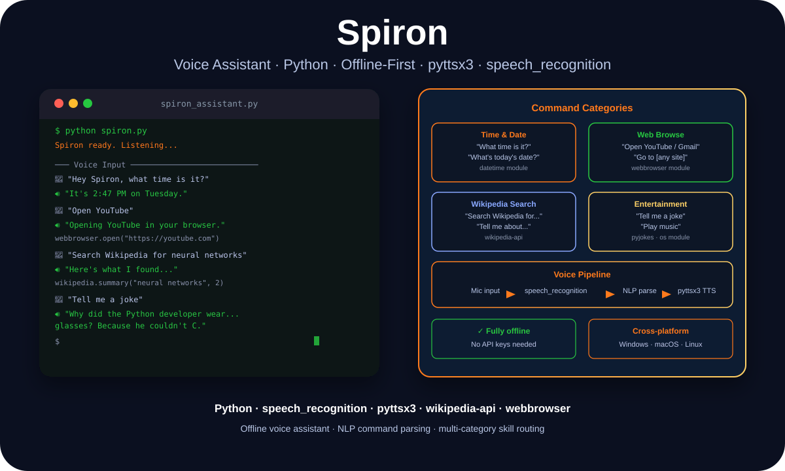

Voice Systems · Python · Offline-First
Spiron: Building a Fully Offline Voice Assistant Before LLMs Made It Easy

Danish Nadar
AI Engineer · Illinois Institute of Technology
Spiron started as a project to understand voice-first interfaces from scratch — no API keys, no cloud dependencies, no shortcuts. speech_recognition, pyttsx3, and a lot of command parsing logic taught me what voice UX actually requires.

Spiron — offline voice pipeline with speech_recognition, NLP parsing, and pyttsx3 TTS
Before ChatGPT, before voice APIs were everywhere
Spiron was built in 2022 — before large language models became the obvious answer to every voice interface question. Building a voice assistant at that time meant making real decisions: what speech recognition engine? What TTS? How do you handle command intent without a language model doing the disambiguation for you?
The constraint I set for myself: fully offline. No API calls, no cloud dependency, no keys to manage. The system had to work on any machine with a microphone and speakers, without an internet connection.
That constraint forced me to think carefully about what a voice assistant actually needs to do — and what it doesn't. You don't need GPT-4 to answer "what time is it" or "open YouTube." You need reliable speech recognition, clean intent parsing, and a fast response loop. Those are the actual hard problems in offline voice UX.
The stack: speech_recognition, pyttsx3, and intent routing
The speech recognition layer uses the Python speech_recognition library, which wraps several backends. For offline use, the CMU Sphinx engine handles transcription without any network call. For environments where internet access is available, the Google Web Speech API provides significantly better accuracy — but Spiron works in either mode.
Text-to-speech uses pyttsx3 — a cross-platform TTS engine that works on Windows, macOS, and Linux using the native voice engine on each platform. Response latency is under half a second, which is fast enough to feel conversational rather than mechanical.
Intent routing is the part that required the most thought. Without a language model, you parse intent through pattern matching and keyword detection. The challenge is making the patterns robust enough to handle natural variation without becoming so complex they're unmaintainable. The solution: category-based routing first, then specific intent detection within each category.
What Spiron taught me about voice UX
The biggest lesson: voice interfaces require different error handling than visual interfaces. When a GUI fails, you can show an error message and the user recovers. When a voice assistant fails — doesn't understand the command, gives a wrong response — the experience breaks completely. There's no visual cue to orient the user.
Spiron's error handling philosophy: acknowledge what you heard, explain what you can do, and offer an alternative. "I didn't catch that — you can ask me the time, open a website, or search Wikipedia." That feedback loop kept the assistant usable even when recognition failed. It's a pattern I carried forward into AILA and every voice-adjacent project since.
Stack
Python · speech_recognition · pyttsx3 · wikipedia-api · webbrowser · pyjokes
Key lesson
Voice UX requires graceful failure handling above all else. A voice assistant that doesn't know how to recover from misrecognition is unusable.